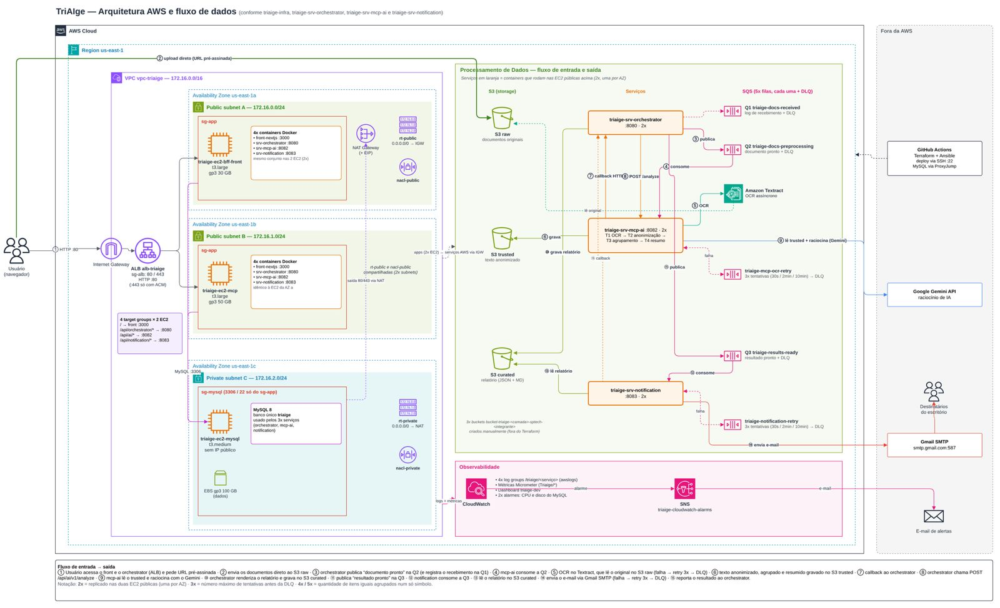

Triagem e análise inicial são majoritariamente manuais e feitas diariamente por muitos profissionais.
SISTEMAS DE INFORMAÇÃO
TriAIge
A solução que usa IA e arquitetura em nuvem para resumir, classificar e sugerir a prioridade de casos para revisão dos escritórios jurídicos.
Gabriel Nunes · Gabriel Schiavo · Gyulia Piqueira
Kaori Katayama · Miguel Araujo
VAMOS PENSAR JUNTOS
Quantos documentos precisam ser analisados antes de um escritório conseguir uma decisão? E quanto tempo é necessário para isso?
O TAMANHO DO DESAFIO
Um mercado com alto volume de demandas jurídicas
40,9 mi
processos novos no Brasil em 2025 (maior volume desde 2009)
75,5 mi
processos em andamento em 2025
(1 processo para cada 3 brasileiros)
50 mil
escritórios de advocacia inscritos na OAB SP
Como podemos transformar esse volume de dados em informação organizada e prioridades claras?
CNJ · Justiça em Números 2026, ano-base 2025 · OAB SP em números
CONTEXTO E PROBLEMA
Alta demanda, baixa automação: a triagem ainda é manual
Horas de profissionais qualificados vão para tarefas repetitivas,
com retrabalho e
baixa
escalabilidade.
A digitalização dos processos cresceu e o uso de IA nos
escritórios
para análise,
classificação e resumo dos documentos já avança,
porém sem
controle eficiente dos
dados compartilhados.
Frequência de triagem jurídica na amostra
Diariamente45,9%
Semanalmente32,4%
Ocasionalmente10,8%
Raramente5,4%
Nunca5,4%
81% dos profissionais dizem que o volume de documentos afeta a produtividade.
Pesquisa de campo TriAIge, 2026 - 37 profissionais do Direito respondendo à pesquisa. - LEGALE, 2026 - JUSBRASIL, 2024
FOCO DO PROJETO
E se a tecnologia pudesse fazer a etapa inicial do processo?
A triagem jurídica consiste na análise inicial de um caso, envolvendo a avaliação, classificação e priorização dos documentos e demandas.
Ler, entender o contexto e classificar cada caso.
Documentos e informações chegam de formas diferentes.
Datas e informações relevantes exigem atenção.
Conhecimento individual e dados dispersos dificultam a gestão.
SOLUÇÃO E DIFERENCIAL
Uma primeira análise organizada para revisão
Documento
O escritório envia o caso pelo canal configurado por ele, integrado à TriAIge.
A solução é agnóstica ao canal de entrada, integrando-se a diferentes meios utilizados pelo escritório, como e-mail, WhatsApp, CRM.
TriAIge
Anonimiza, classifica, resume e evidecia prazos e as informações mais importantes.
Anonimização: nomes, CPFs, endereços e outros dados pessoais são removidos ou substituídos antes de o texto chegar à IA.
Entrega
O relatório é disponibilizado para validação e revisão pelo profissional responsável.
A análise final e a utilização dos resultados são de responsabilidade do cliente, sem retorno de feedback à ferramenta.
A TriAIge fornece anonimização, triagem inteligente, restreabilidade de operações e observabilidade de documentos jurídicos, unindo eficiência operacional, governança, segurança e conformidade com a LGPD.
VALOR E GOVERNANÇA
Mais produtividade e inteligência na tomada de decisão
A TriAIge transforma documentos em informações estruturadas, permitindo que os profissionais operem de forma mais estratégica, ágil, organizada e segura.
Menos tempo para ler e organizar documentos
Mais eficiência na classificação e priorização
Mais controle sobre processamento e rastreabilidade
Mais segurança de informações durante o processamento
A IA prepara. O profissional decide.
PERSONAS E EXPERIÊNCIA
Menos leitura repetitiva, mais foco no caso
Lucas Mendes
Advogado júnior · 25 anos
“Menos tempo lendo e organizando documentos, mais tempo analisando o que importa.”
Hoje
Uma fila de documentos para ler.
Com a TriAIge
Resumo e prioridade para organizar a revisão.
Carla Souza
Advogada autônoma · 40 anos
“Só confio na IA se ela mostrar de onde vem cada informação e proteger os dados dos meus clientes.”
Hoje
Pouco tempo e receio de expor dados.
Com a TriAIge
Acompanhamento do caso e rastreabilidade.
VISÃO TÉCNICA
O documento passa por quatro etapas dentro da TriAIge
-
Recebimento
Valida os documentos do escritório e guarda o original.
Amazon S3 -
Preparação
Extrai o texto, normaliza e anonimiza os dados.
OCR da AWS -
Análise
Analisa o texto anonimizado e gera a triagem do caso.
Gemini -
Entrega
Envia o relatório final e encerra a triagem.
Relatório e notificação
A anonimização acontece antes do envio do conteúdo ao modelo.
ARQUITETURA
Infraestrutura proposta na AWS
1 / 4

Arquitetura atual enviada pelo grupo · Passe o mouse pelas etapas ou use as setas.
DEMO 1
Triagem · envio de documentos jurídicos e notificação
DEMO 2
Monitoramento e métricas de negócio
MODELO DE NEGÓCIO
Assinatura por escritório e implantação inicial
ESSENCIAL
R$ 490/mês
100 unidades · 2 usuários
Integração assistidaE-mail e Web
PROFISSIONAL
R$ 1.290/mês
500 unidades · 5 usuários
Integração assistidaE-mail, Web, WhatsApp e API
CORPORATIVO
R$ 3.500/mês
1.000 unidades · 15 usuários
Integração assistidaTodos os canais e CRM homologado
Mensalidade
Recorrente, definida pelo plano: usuários, volume de documentos e canais disponíveis.
Implantação única: R$ 2.000
Configuração e integração assistida com os canais do plano contratado.
Franquia em unidades
1 unidade = até 10 páginas. Franquia mensal, sem acúmulo ou excedente.
MERCADO E OPORTUNIDADE
Mesmo com uma fatia pequena do mercado, a assinatura se sustenta
50 mil
escritórios de advocacia inscritos na OAB SP
17,7 mil
mercado atendível (SAM) - 30% de elegibilidade sobre a base paulista
500
escritórios no cenário conservador:
1% da base e 2,8% do SAM
Cenário conservador: com 500 escritórios no plano Essencial (o mais barato - R$ 490/mês), a receita seria de R$ 2,94 mi por ano.
OAB SP em números · SAM do Business Case (hipótese de elegibilidade de 30%) · Cálculo: 500 × R$ 490 × 12.
VIABILIDADE COMERCIAL · CAPITAL
A TriAIge chega ao caixa anual positivo já no Ano 3
Aporte projetado
R$ 1,22 mi
Cobre o maior saldo negativo acumulado (Ano 2) até a receita cobrir as saídas.
- Equipe: desenvolvimento, evolução e sustentação
- Tecnologia: nuvem, IA, APIs de jurisprudência e monitoramento
- Comercial: aluguel de equipamentos e aquisição de clientes
CAPEX zero: sem compra de servidores ou equipamentos.
VIABILIDADE COMERCIAL · RETORNO
O cenário projeta recuperação do capital no Ano 5
VPL positivo: o projeto recupera os recursos do fluxo de caixa e ainda gera valor acima da rentabilidade mínima exigida de 18% ao ano.
Cada R$ 100 de custo considerado gera R$ 19,71 de ganho líquido no horizonte do projeto.
Para cada R$ 1,00 de fluxo líquido negativo, o projeto gera R$ 2,17 de fluxo líquido positivo: geração de caixa superior ao capital desembolsado.
Payback no Ano 5: é quando o caixa acumulado se torna positivo, ou seja, o projeto recupera todo o aporte investido e passa a gerar caixa líquido.
A TriAIge devolve o capital investido e ainda gera valor acima do exigido.
VIABILIDADE COMERCIAL · RISCOS
O que pode pressionar o caixa, e como cada risco é controlado
Risco · Ação de Controle
Custo fixo antes da escala
Contratar por etapas e revisar as metas de aquisição com o caixa mensal.
Dependência do mix de planos
Validar preços e conversão em piloto e simular um mix conservador.
Custo variável de IA e APIs
Medir custo por caso, limitar tentativas e alertar sobre consumo e reajustes.
Infraestrutura sujeita a carga e câmbio
Orçamento com alertas, política de retenção e cenários de câmbio e carga.
Acompanhar caixa, aquisição e consumo é o que sustenta as premissas do retorno projetado.
VIABILIDADE TÉCNICA · TESTES E RISCOS
No teste de carga, a plataforma suportou o pico testado sem falhar.
Teste 1 · Muitos usuários ao mesmo tempo
Simulamos até 150 pessoas usando o sistema juntas.
150usuários simultâneos no pico
0%de erros
< 0,3 stempo de resposta típico (281 ms)
≤ 2,4 sem 95% das respostas (2.359 ms)
O que não mede: a leitura dos documentos, a IA e o envio de e-mail ficaram desligados. O teste avalia a plataforma, não a capacidade máxima.
Teste 2 · Um caso do início ao fim
Enviamos casos reais pelo fluxo completo, até a notificação final.
27 sdo envio ao aviso, no 1º caso
32 sdo envio ao aviso, no 2º caso
Ponto de atenção: um terceiro caso ficou travado na fila. Ao reenviarmos o documento, ele foi processado normalmente. Corrigimos a publicação na fila e paginamos a lista do painel administrativo.
Testes de 05/11/2026.
Riscos · Ação de Controle
O provedor de IA pode falhar ou encarecer
Provedor alternativo e alertas de consumo.
A anonimização pode deixar passar algum dado
Medir quantos passam e manter a auditoria separada.
Acesso indevido pelos canais de entrada
Troca periódica de credenciais e testes de segurança.
A IA pode errar um prazo processual
Regras fixas para prazos e revisão pelo profissional.
INDICADORES DE SUCESSO E SLA
Metas mensuráveis: triagem em minutos, com dados protegidos
Tempo médio de triagem
< 6 min
Do recebimento à geração do relatório.
Referência de mercado: segundo a EasyJur, advogados gastam em média 2 h por dia em tarefas administrativas, como a triagem, que poderiam ser automatizadas.
Funciona sem retrabalho?
> 85%dos casos concluídos sem reprocessamento
< 5%de retrabalho
Qual a confiabilidade?
99,9%de disponibilidade mensal da API
98,5%de sucesso no envio
É confiável e seguro?
> 95%de precisão de OCR/IA
0incidentes de exposição de dados
EasyJur Blog, 2026.
CONCLUSÃO
Um problema real, uma solução testada e um negócio que se sustenta
O problema é real
40,9 mi de processos novos no Brasil em 2025, o maior volume da série.
81% dos profissionais dizem que o volume de documentos afeta a produtividade.
A solução funciona
Plataforma testada com 150 usuários simultâneos e 0% de erros.
Anonimização antes da IA, alinhada à LGPD, e decisão sempre do profissional.
O negócio se sustenta
Receita recorrente por assinatura.
Caixa anual positivo no Ano 3, com CAPEX zero.
VPL positivo e MOIC de 2,17× no cenário-base.
Menos tempo na triagem. Mais foco na decisão jurídica.
AGRADECIMENTOS
Obrigado!
Este projeto é resultado de muitas contribuições, aprendizados e pessoas que fizeram parte dessa trajetória.
À nossa família
Pelo apoio, a paciência e o incentivo em cada etapa.
À SPTech
Pelos professores, orientações e estrutura que nos trouxeram até aqui.
Às empresas onde trabalhamos
Pela experiência que levamos para dentro da TriAIge.
Safra · PwC · Bradesco · Quando Previdência · Inbot
Gabriel Nunes · Gabriel Schiavo · Gyulia Piqueira
Kaori Katayama · Miguel Araujo